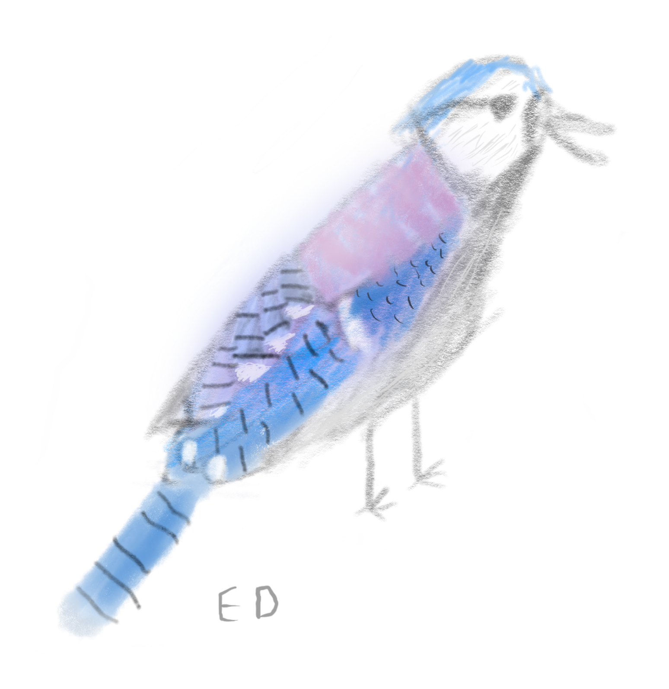
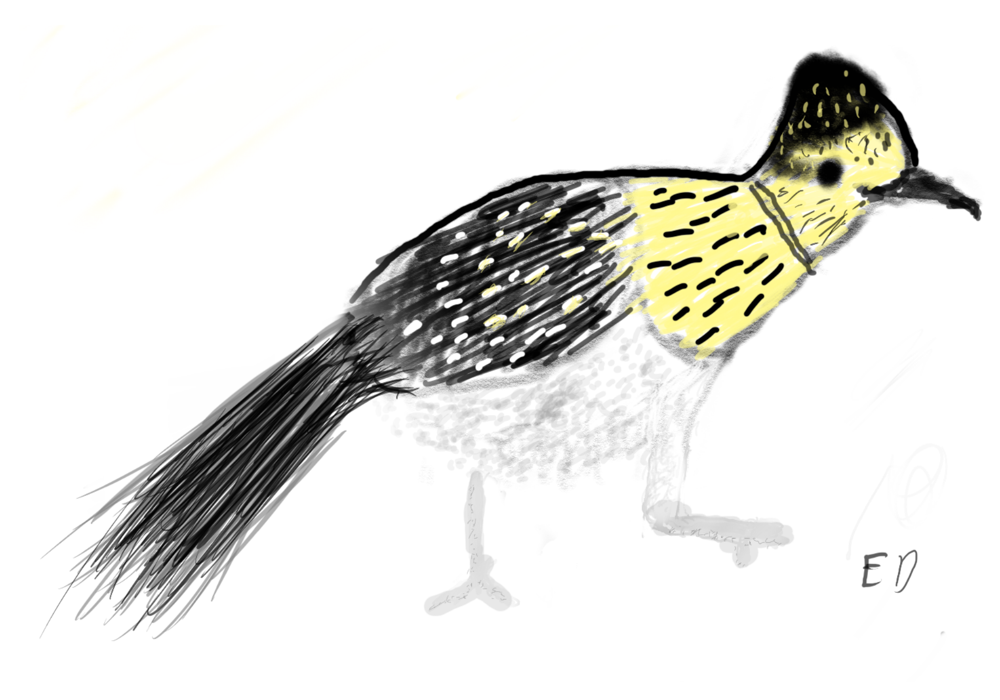
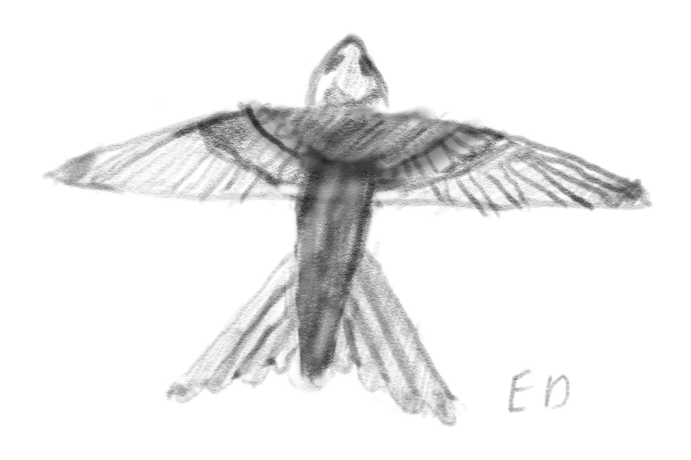
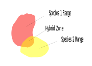

The Evolution and Survival Tactics of Birds
How Birds Survive Winter
Irruptive Migration
Some winters may be colder than usual or have a lack of food. To combat this, some animals can undergo an irruptive migration. Irruptive migrations are not done every year and are a way of escaping extra harsh conditions. Irruptive migrations do not have a set destination that the animals must move to. The goal of irruptive migrations is usually to escape extra harsh winter conditions, but not to escape winter entirely. Corvids are an example of a family that can undergo irruptive migrations. If a flock of crows does migrate they won't go very far with a average distance of ~500km. Data from banding blue jays showed that 89% of the population did not migrate and 11% migrated.
Flocking Together
Many birds will form large roosts during winter (for example, jays live in pairs during summer but live in flocks during winter). These roosts allow body heat to be shared and conserved. Roosts can also be used to help detect predators and transmit information. With crows, resident and migratory flocks will form roosts together during night. Up to 2 million crows have been seen in a single roost.
Other Ways of Surviving
- Birds will fluff their feathers to give a layer of insulating air. This can reduce heat loss by 30%.
- Birds have a type of fat they burn when shivering that produces 5x as much heat as it does in humans.
- Sun bathing is a common way to increase body temperature during winter.
- Birds will stand on one foot and pull the other under the feathers to prevent it from freezing. If it gets too cold they can squat on both of their legs.
- Birds have a good circulatory system in their legs that continually exchanges the cold blood from their legs and the warm blood from their body. This is why duck’s feet don't freeze when swimming in cold water.
- Blue jays that live in colder environments have larger bodies than blue jays in warmer environments because it reduces heat radiation.
- Blue jays will cache food in various places for later. They are known to actually chip paint off of houses and cache them for later. Although, this is for a calcium source for when nesting season starts. Leaving our eggshells will stop blue jays from chipping away at your paint. (Please bake/boil the eggshells first.)
- Blue jays will make their nests in evergreen foliage. This helps with insulation and protection from the weather. Leaves, twigs and feathers are used in building the nests to provide good insulation.
- Ravens can survive temperatures of -50˚C.
Walking, Hopping, and Running
-

- Even though most birds can fly, they still need to be able to move on the ground. Most of these birds will walk, run, and/or hop along the ground.
- Small birds with small legs will usually hop because one hop covers the length of many steps. Hopping uses less energy and is faster than walking for these birds.
- Running is, however, faster than hopping. Birds that forage and/or nest on the ground usually run instead of hopping. Blackbirds will hop along the ground, but if they need speed they will run.
- Many birds that forage in estuaries and along seashores have long legs to allow them to wade in water. They usually do not hop because they have a long stride length and it would be difficult to hop on their legs.
- Sandpipers are a shorebird with short legs that run. They do this because it helps them escape waves.
- Most birds will move along the ground like the other members of their group. Although, corvids usually walk but jays hop.
The Requirements for Flight
Birds are much more uniform than mammals in terms of anatomy. Almost every bird evolved to fly and so they all have similar anatomy. Not all mammals were designed for the same thing, so they vary drastically from each other. For something to fly it must:
- be lightweight and,
- have high power
- strong wings,
- feathers,
- warm blood,
- an amazing respiratory system,
- hollow bones,
- and a strong, large heart
Adaptations to Become Light Weight
- To be light, bird bones are porous and hollow. This can result in having weaker bones. To strengthen the bones, some are fused together that are not normally fused in other vertebrates. To increase the strength of the rib cage, they overlap the ribs with surrounding ribs to increase strength.
- Additionally, the abdomen and breasts contain hollows that are filled with air. The air sacks are also used for cooling the bird.
- Feathers are extremely light and are amazing at flight and thermal insulation. Although, feathers usually weigh 2-3 times the weight of the skeleton.
- The reason why birds cannot move their eyes well is because they don't have many muscles controlling them. This is to keep the head light and can be easily compensated for by having a more flexible neck.
Adaptations to have the Power Needed for Flight
- Flight takes considerable power. Every 10˚C rise in temperature will result in double the rate of a chemical reaction (give or take). So, birds have the highest body temperature of all animals on earth to allow them to produce the power needed for flight.
- Flight would not be possible in cold climates without endothermism. Endothermism would also be impossible without the feathers to prevent heat loss. So feathers were most likely an adaptation for thermal insulation. (Feathers were not originally for flight because the first dinosaurs to have them could not fly.)
- The breast muscles in a bird are used to move their wings. In strong flyers, like pigeons, these muscles can be 2/5ths of their entire weight. (This is not the case for all birds.)
- Good circulation is important in the muscles needed for flight. If the circulation is too low, the bird will not be able to fly far because fuel and oxygen will not be brought to the muscles fast enough. Furthermore, waste products will not be carried away by the circulation. All these things combined would result in the muscles temporarily losing functionality.
- Birds have air sacks in their bodies that connect to the lungs. These air sacks usually connect to the bones. The air sacks help optimize the use of oxygen and are also used for cooling the bird. A pigeon in flight uses around 3/4ths of its air intake for cooling.
Balance and Aerodynamics

- For flight, the centre of balance must be between and a bit lower than the wings.
- The cost of a heavy head is that a longer tail is needed for counterbalancing. So, birds lack teeth to keep the head light. The role of teeth is replaced by the muscular gizzard, so the weight can be shifted to the centre of gravity. The gizzard grinds food, usually by using ingested grit. (Yes, some birds swallow rocks.)
- Also, aerodynamics are important to improve the efficiency of flight.
- Feathers help improve aerodynamics. The legs are folded beneath the feathers and birds have no external ears to prevent the loss of aerodynamics.
Flight Records
- The perigrine falcon has the fastest speed of 83.3m/s. However, this speed can only be reached when diving.
- The fastest recorded animal in level flight is the Brazilian free-tailed bat with a speed of 45m/s. They took this record from the common swift with a speed of 31m/s.
- The fastest animal may, however, be the white-throated needle tail at 47m/s. Although, this has not been proven scientifically.
- The common swift also has the record for longest sustained flight, remaining airborne for 10 months. Common swifts only really spend time on the ground for the 2 months they use to raise their chicks. It is assumed that the they sleep when gliding down from a 10000ft altitude.
- Anna's hummingbird has the fastest flight speed for any vertebrate in terms of BLPS(body-lengths per second). They can cover 385BLPS, being more than twice the speed of fighter jets(150BLPS). Although, some insects can out pace them in terms of BLPS.
Vision
- Birds need great vision to catch prey and not crash into things when in flight.
- Bird eyes are actually bigger than they look because everything but the pupil is covered with skin and feathers.
- The bigger the eyes, the more colour receptors, leading to seeing a clearer image.
- Birds also posses a fourth photoreceptor allowing them to see ultraviolet light. This is useful for many things, including being able to see the urine trails of prey.
Hybridization
Hybridization occurs when two organisms of different species have offspring, with plants being more likely to hybridize than animals. Animals can only hybridize with other species of the same family. Hybridization occurs in hybrid zones where two species have a range that overlaps. Hybrids are usually infertile and are less fit than the parent species. Although, there are successful hybrids, that can reproduce. In some cases, the offspring are not intermediates of their parents and are classified as heterotic (this can result in greater or lower fitness than the parents). This is more common in plants. Hybridization can cause some species to become extinct from producing hybrid offspring instead of offspring of the endangered species.
In birds
- Hybridization is extremely common in birds with around 1/6th of bird species having known hybrids.
- Steller's jays have 18 subspecies, some of which are from interbreeding with blue jays.
- Generally speaking, the more closely related the parent species, the more fit and fertile the bird.
Citations
- About Birds and Their Adaptations to Climate Change. https://contourfeather.github.io/. Accessed 23 Jan. 2024.
- Albert, Kristin. “Crow Flight Speed: How Fast Can a Crow Fly?” The Worlds Rarest Birds, 9 Nov. 2023, https://theworldsrarestbirds.com/how-fast-can-a-crow-fly/.
- Albert, Kristin. “How Blue Jays Survive Winter: Survival Tactics for Birds.” The Worlds Rarest Birds, 19 Dec. 2023, https://theworldsrarestbirds.com/blue-jays-in-winter/.
- Appleton, Dave. “Bird Hybrids: Fertility and Viability of Hybrids.” Bird Hybrids, 15 Jan. 2015, https://birdhybrids.blogspot.com/2015/01/fertility-and-viability-of-hybrids.html.
- “Bird Hybrid.” Wikipedia, 20 Jan. 2023. Wikipedia, https://en.wikipedia.org/w/index.php?title=Bird_hybrid&oldid=1134775562.
- Birds of the World - New Hybridization Section Offers Unparallelled Visibility into Avian Hybrids. https://birdsoftheworld.org/bow/news/hybridization-section. Accessed 1 Feb. 2024.
- “Blue Jay.” Wikipedia, 1 Feb. 2024. Wikipedia, https://en.wikipedia.org/w/index.php?title=Blue_jay&oldid=1201623270.
- “Feather.” Wikipedia, 13 Jan. 2024. Wikipedia, https://en.wikipedia.org/w/index.php?title=Feather&oldid=1195404803.
- “Gizzard.” Wikipedia, 21 Jan. 2024. Wikipedia, https://en.wikipedia.org/w/index.php?title=Gizzard&oldid=1197625565.
- “Hybrid (Biology).” Wikipedia, 23 Dec. 2023. Wikipedia, https://en.wikipedia.org/w/index.php?title=Hybrid_(biology)&oldid=1191366391.
- Jha, Alok, and science correspondent. “Hummingbirds Outpace Fighter Pilots.” The Guardian, 9 June 2009. The Guardian, https://www.theguardian.com/science/2009/jun/10/hummingbird-fastest-animal-fighter-jet.
- margaret. “Blue Jays Part 2: Why Are They Chipping Paint off My House?” A Way To Garden, 25 Jan. 2015, https://awaytogarden.com/blue-jays-part-2-chipping-paint-off-house/.
- News ·, C. B. C. “How Ravens Survive at –50 C | CBC News.” CBC, 21 Dec. 2019, https://www.cbc.ca/news/canada/north/how-ravens-survive-1.5404874.
- Shea, Susan. Boisterous Blue Jays Flock in Winter | The Outside Story. 16 Jan. 2017, https://northernwoodlands.org/outside_story/article/boisterous-blue-jays-winter.
- Shea, Susan. Crows in Winter | The Outside Story. 21 Feb. 2022, https://northernwoodlands.org/outside_story/article/crows-winter.
- “Steller’s Jay.” Wikipedia, 3 Feb. 2024. Wikipedia, https://en.wikipedia.org/w/index.php?title=Steller%27s_jay&oldid=1202921010.
- Stolen, Dr Joanne. Summit Outside: How Birds That Do Not Migrate Survive the Winter. 8 Jan. 2012, https://www.summitdaily.com/news/summit-outside-how-birds-that-do-not-migrate-survive-the-winter/.
- The Amazing World of Hybrid Birds | Audubon. 29 May 2013, https://www.audubon.org/news/the-amazing-world-hybrid-birds.
- The Common Swift Is No Longer the Fastest-Flying Animal | Audubon. 21 Nov. 2016, https://www.audubon.org/news/the-common-swift-no-longer-fastest-flying-animal.
- The Common Swift Is the New Record Holder for Longest Uninterrupted Flight | Audubon. 7 Nov. 2016, https://www.audubon.org/news/the-common-swift-new-record-holder-longest-uninterrupted-flight.
- Welty, Joel. The Life of Birds, 4th edition. 1988.
- What Makes Bird Vision So Cool | Audubon. 30 May 2013, https://www.audubon.org/magazine/may-june-2013/what-makes-bird-vision-so-cool.
- Why Do Some Birds Hop and Others Walk? https://www.sciencefocus.com/nature/why-do-some-birds-hop-and-others-walk. Accessed 25 Jan. 2024.